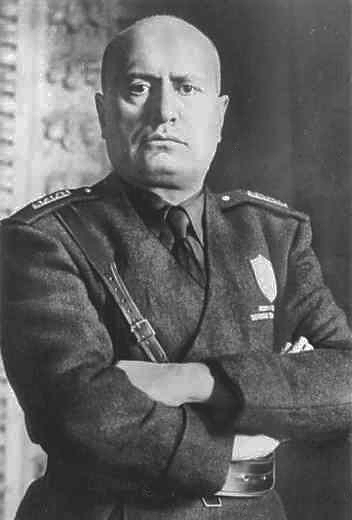

L’Italia tra le due guerre il fascismo
CONSENSO E PROPAGANDA
Benito Mussolini
Mussolini concepì, dunque, il fascismo come un regime che doveva essere totalitario (doveva cioè diffonder si in tutta la società ed abbracciare qualunque ambito della vita economica, politica, sociale culturale della nazione) e cercò di comportarsi come gli imperatori dell’antica Roma e decise usare il titolo di Duce che in latino significa “generale vittorioso”.